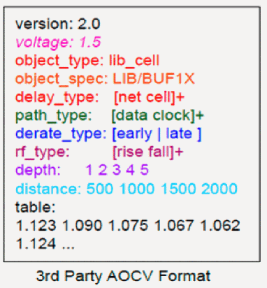
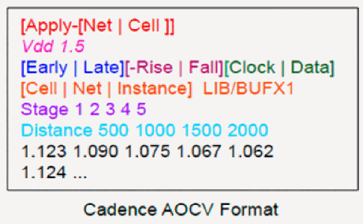

Using AOCV Derating Library Formats
There are two different AOCV derating library formats:
The characterization data within either format is essentially the same - the differences are mainly syntactic.
External AOCV Format
The external AOCV format is currently supported by third parties. For example,

Cadence-Specific AOCV Derating Format

Cadence-Specific AOCV Derating Format: Library Syntax
The Cadence specific AOCV derating format is made of several sections allowing you to customize how each table is applied:
| Sections | Tags | Notes |
The table sections are described below.
Table Group
The Apply- tag can be used with either a net or cell descriptor to designate the table for use in derating net delays or cell delays, respectively. If the Apply- tag is not specified, then the table will be used for both net and cell delay derating. The Apply- tags are described below:
To designate a table for only net-based derating, you should specify: Apply-Net To designate a table for only cell-based derating, use the following: Apply-Cell If you use the Object ID field to specify unique tables for specified libraries and/or library cells, you should also specify Apply-Cell for these tables.
Table ID
The Table ID is a tag made up of up to three sub tags, which are used to further indicate to the derating table to control early versus late, rise versus fall, and clock path versus data path. {Early | Late}
Each table specifies Early or Late tags. Each object related to AOCV derating has both Early and Late derating tables. AOCV derating of only early or late paths is not allowed. It is, however, legal to use derating values of 1.0 for the tables.
By default, an Early or Late derating table is used to supply derating for both rising and falling delays. If a unique derating for each transition is required, the -Rise or -Fall tag can be added to the Table ID for more specific results. {Early-Rise}To configure a table for only rising delays on early paths, you should use Early-Rise sub tag. {Late-Fall}To configure a table for falling delays on late timing paths, you can specify Late-Fall. [Clock | Data] Derating tables can also be configured so that they are specific to clock path delays or data path delays. This can be achieved by adding a final -Clock or -Data tag to the Table ID string.
The complete set of possible Table IDs is:
In the case where there is an overlap in the table specification, the derating table with the tightest specification is used.
Object ID
You can further control the AOCV derating tables to be applied to specific timing libraries or library cell groups. The syntax also supports specifying design-level cell instances or nets, however, these types of design-level references are not currently supported.
In the AOCV flow you can use the Cell Object ID to designate particular derating tables to be used for specific library-level groups. An object expression using simple wildcard rules can be used for a variety of selection criteria. For example, the following expression specifies a derating table to be used for a specific library:Cell stdcell/*
The following expression specifies derating for a specific library cell: Cell stdcell/BUF1S
The following expression specifies a common derate table for a group of cells with similar drive strength: Cell stdcell/*1S
Cell stdcell/*4S
The following expression specifies a common derate factor for a group of libraries at the same corner: Cell *-P1V15T120/*
Table Voltage
In the future, an optional voltage designation for the table can be specified by adding the Voltage specifier to the model description. You can specify several tables with different voltage specifications within the same .aocv library file. When performing derating, the system uses the table that matches the current operating voltage of the cell. If the operating voltage of the cell does not exactly match one of the specified voltage points, then the following are considered:
- If the operating voltage is between the Voltage points of two derating tables, the system will use linear interpolation to derive the proper derating factor.
- If the requested voltage is large than the maximum Voltage table, then that table data will be used without extrapolation.
- If the requested voltage is lower than the minimum Voltage table, then the minimum Voltage data is used without extrapolation.
-
To specify a voltage of 1.5Volts for the derating table, use a specification of:
Voltage 1.5
Derating Table
The AOCV format allows derating table specifications that are either one or two-dimensional – the possible axes being Distance, the bounding box diagonal of that path, and Stage - the stage count depth of the path. Although AOCV graph-based analysis supports stage-based derating only, you may specify either a 1-D stage-based table, or a 2-D Stage x Distance table.
When using a 2-D table in conjunction with AOCV graph-based stage-based only analysis, the system will attempt to pick the proper row of the table based on the estimated chip and/or core dimensions. If the software includes physical information, the chip and core size are automatically determined from the design. The timing_aocv_chip_size and timing_aocv_core_size attributes can be used in the software to specify the physical dimensions when this information is not available. If this value falls off the table, then the final row of the table will be used without extrapolation.
The Stage and Distance keywords are added to the model to provide the axis points for the table. The table rows represent “distance” variance and the columns “stage count”, irrespective of the order in which stage and distance keywords are specified for the model. These are explained below:
Distance: List of distance (real) values, specified in microns, increasing in magnitude.
Stage: List of integer values representing stage depth, increasing in magnitude.
The following example shows a derating table with 5 Stage indices and 4 Distance indices:
Stage 1 2 3 4 5
Distance 500 1000 1500 2000
1.123 1.090 1.075 1.067 1.062
1.124 1.091 1.076 1.068 1.063
1.125 1.092 1.077 1.070 1.065
1.126 1.094 1.079 1.072 1.067
In case the stage or distance lookup value goes beyond the range of the table - either smaller or larger, the system will use the last bound entry point. Extrapolation will not be performed on either end of the axis.
Return to top